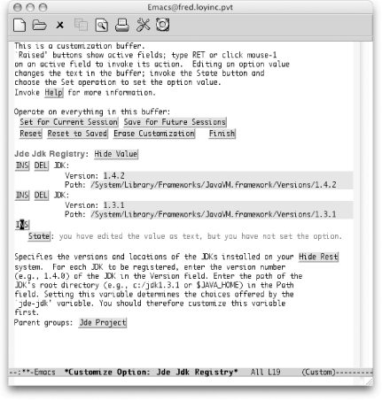
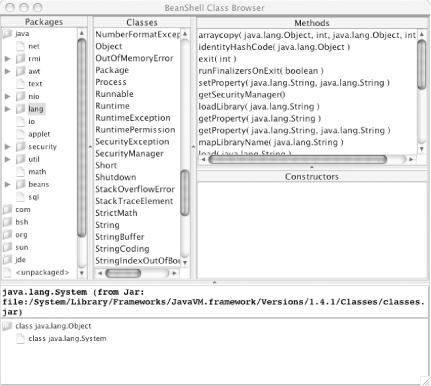
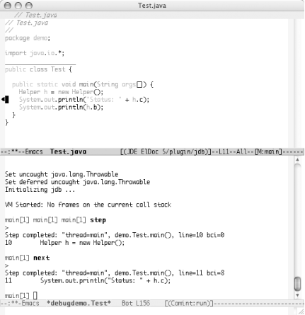

{% include JB/setup %}
{% raw %}
<div>
<div class="book" xml:lang="en"><div class="book"><div class="book"><div class="book"><h1 class="title"><a id="gnu3-CHP-9-SECT-5" class="calibre1"></a>The Java Development Environment for Emacs (JDEE)</h1></div></div></div><p class="copyright">While you can certainly <a id="gnu3-CHP-9-ITERM-2582" class="calibre2"></a>get started right away
with the built-in Java mode, if you do more than occasional Java
programming, you might want to venture into the world of Paul
Kinnucan's Java Development Environment for Emacs
(JDEE). It takes Emacs into the realm of Java IDE. You
won't find a GUI builder, but everything else is in
place and ready to roll.</p><div class="book" xml:lang="en"><div class="book"><div class="book"><div class="book"><h2 class="title1"><a id="gnu3-CHP-9-SECT-5.1" class="calibre1"></a>Getting Started</h2></div></div></div><p class="copyright">You can pick up the latest version of the JDEE online from
<a class="calibre2" href="http://jdee.sunsite.dk/">http://jdee.sunsite.dk/</a>.<sup class="calibre6">[<a id="gnu3-CHP-9-FNOTE-10" href="#ftn.gnu3-CHP-9-FNOTE-10" class="calibre2">10</a>]</sup> This site is essential to getting the JDEE up and
running. You'll find all sorts of tips and tricks
and full user documentation on all of the bells and whistles is
available.</p><p class="copyright">Before you can install the JDEE, you'll need the
following components:</p><div class="book"><dl class="copyright"><dt class="book"><span>Collection of Emacs Development Environment Tools (CEDET)</span></dt><dd class="calibre20"><p class="copyright">Available on SourceForge (<a class="calibre2" href="http://cedet.sourceforge.net/">http://cedet.sourceforge.net/</a>) or by
following the links from the JDEE home page. This collection is quite
popular as a foundation for more interesting programmer tools. You
may already have a sufficient version installed, but
it's best to get the latest release.</p></dd><dt class="book"><span>The JDEE Emacs Lisp library package</span></dt><dd class="calibre20"><p class="copyright">Available as a separate download from the JDEE site.</p></dd><dt class="book"><span>One or more JDKs</span></dt><dd class="calibre20"><p class="copyright">While technically not required for editing files in Emacs, a JDK is
required to take advantage of any of the compilation or debugging
features of the JDEE. You'll also have to register
each JDK you plan to use, but more on that later.</p></dd></dl></div></div><div class="book" xml:lang="en"><div class="book"><div class="book"><div class="book"><h2 class="title1"><a id="gnu3-CHP-9-SECT-5.2" class="calibre1"></a>Installing CEDET</h2></div></div></div><p class="copyright">Installing CEDET is <a id="gnu3-CHP-9-ITERM-2583" class="calibre2"></a>
               <a id="gnu3-CHP-9-ITERM-2584" class="calibre2"></a>fairly straightforward if you
have a <span><strong class="calibre5">make</strong></span> command available. (For
Windows users, you'll want to have the Cygnus Unix
Distribution installed. It gives you access to a large subset of Unix
tools which will come in handy far beyond the installation of the
JDEE.)</p><p class="copyright">After you download the CEDET distribution from SourceForge, unpack it
wherever you want it to reside. Open a terminal window (or start a
Cygwin bash terminal on Windows) and change to the directory where
you unpacked the distribution. From there you should be able to run
the following command:</p><a id="I_9_tt482" class="calibre2"></a><pre class="programlisting">shell$ <span><strong class="calibre5">make EMACS=</strong></span>
               <span><strong class="calibre5">
                  <strong class="calibre5"><code class="calibre32">
/path/to/emacs </code></strong>
               </strong></span></pre><p class="copyright">That process will probably take a few minutes to complete. The Lisp
files will be compiled for you.</p><p class="copyright">When the <span><strong class="calibre5">make</strong></span> command completes, you
should be in good shape. The last step for CEDET is to update your
<span><em class="calibre7">.emacs</em></span> file:</p><a id="I_9_tt483" class="calibre2"></a><pre class="programlisting">;; Turn on CEDET's fun parts
(setq semantic-load-turn-useful-things-on t)
;; Load CEDET
(load-file "/<span><em class="calibre7">path-to-cedet</em></span>/common/cedet.el")</pre></div><div class="book" xml:lang="en"><div class="book"><div class="book"><div class="book"><h2 class="title1"><a id="gnu3-CHP-9-SECT-5.3" class="calibre1"></a>Installing the ELisp Library</h2></div></div></div><p class="copyright">Installing the ELisp library package <a id="gnu3-CHP-9-ITERM-2585" class="calibre2"></a>
               <a id="gnu3-CHP-9-ITERM-2586" class="calibre2"></a>from the JDEE site is
also straightforward. Unpack the downloaded file wherever you like,
but before you run the <span><strong class="calibre5">make</strong></span> command,
you'll need to edit the
<span><em class="calibre7">Makefile</em></span> and configure the entries outlined in
<a class="calibre2" href="ch09s05.html#gnu3-CHP-9-TABLE-5" title="Table 9-5. JDEE Makefile entries">Table 9-5</a> to match your system.</p><div class="book"><a id="gnu3-CHP-9-TABLE-5" class="calibre2"></a><p class="title2"><b class="calibre25">Table 9-5. JDEE Makefile entries</b></p><div class="table-contents"><table summary="JDEE Makefile entries" class="calibre8"><colgroup class="calibre9"><col class="calibre10"/><col class="calibre10"/><col class="calibre10"/></colgroup><thead class="calibre11"><tr class="calibre12"><th class="calibre26">
                           <p class="copyright">Makefile entry</p>
                        </th><th class="calibre26">
                           <p class="copyright">Example</p>
                        </th><th class="calibre27">
                           <p class="copyright">Description</p>
                        </th></tr></thead><tbody class="calibre15"><tr class="calibre12"><td class="calibre28">
                           <a id="I_9_tt484" class="calibre2"></a><pre class="programlisting">prefix</pre>
                        </td><td class="calibre28">
                           <a id="I_9_tt485" class="calibre2"></a><pre class="programlisting">/usr/local</pre>
                        </td><td class="calibre29">
                           <p class="copyright">The top-level directory for any shared or info directories.</p>
                        </td></tr><tr class="calibre12"><td class="calibre28">
                           <a id="I_9_tt486" class="calibre2"></a><pre class="programlisting">datadir</pre>
                        </td><td class="calibre28">
                           <a id="I_9_tt487" class="calibre2"></a><pre class="programlisting">$(prefix)/share</pre>
                        </td><td class="calibre29">
                           <p class="copyright">The directory where your main Emacs directory is located.</p>
                        </td></tr><tr class="calibre12"><td class="calibre28">
                           <a id="I_9_tt488" class="calibre2"></a><pre class="programlisting">locallisppath</pre>
                        </td><td class="calibre28">
                           <a id="I_9_tt489" class="calibre2"></a><pre class="programlisting">$(datadir)/emacs/site-lisp</pre>
                        </td><td class="calibre29">
                           <p class="copyright">The directory where any local Lisp files should be installed.</p>
                        </td></tr><tr class="calibre12"><td class="calibre28">
                           <a id="I_9_tt490" class="calibre2"></a><pre class="programlisting">ELIBDIR</pre>
                        </td><td class="calibre28">
                           <a id="I_9_tt491" class="calibre2"></a><pre class="programlisting">$(locallisppath)/elib</pre>
                        </td><td class="calibre29">
                           <p class="copyright">The directory where the elib Lisp files will go.</p>
                        </td></tr><tr class="calibre12"><td class="calibre30">
                           <a id="I_9_tt492" class="calibre2"></a><pre class="programlisting">EMACS</pre>
                        </td><td class="calibre30">
                           <a id="I_9_tt493" class="calibre2"></a><pre class="programlisting">/usr/bin/emacs</pre>
                        </td><td class="calibre31">
                           <p class="copyright">The command to start Emacs. This can be a fully qualified path or
simply "emacs" to reach the default
version found on your system.</p>
                        </td></tr></tbody></table></div></div><br class="book"/><p class="copyright">Run the <span><strong class="calibre5">make</strong></span> command with the
<span><strong class="calibre5">install</strong></span> option to get everything set
up:</p><a id="I_9_tt494" class="calibre2"></a><pre class="programlisting">shell$ <strong class="calibre5"><code class="calibre32">make install</code></strong></pre><p class="copyright">The last step for the ELisp library is to make sure the Emacs
defaults acknowledge the new package. You simply need to add the new
directory to your <span><strong class="calibre5">load-path</strong></span>
variable, as described next.</p><p class="copyright">The ELisp library actually provides a simple template file that
matches where you installed the package. After the <span><strong class="calibre5">make</strong></span> process completes, you should have an
<span><em class="calibre7">elib_startup.el</em></span> file in the directory where you
ran the <span><strong class="calibre5">make</strong></span> command. That file
contains the line you'll need to add to your
<span><em class="calibre7">.emacs</em></span> file or you can merge it with the system
<span><em class="calibre7">default.el</em></span> file for everyone to use. (The
<span><em class="calibre7">default.el</em></span> file is often found in your
<span><em class="calibre7">site-lisp</em></span> directory. <a class="calibre2" href="ch11.html" title="Chapter 11. Emacs Lisp Programming">Chapter 11</a> has more details.)</p></div><div class="book" xml:lang="en"><div class="book"><div class="book"><div class="book"><h2 class="title1"><a id="gnu3-CHP-9-SECT-5.4" class="calibre1"></a>Installing the JDEE</h2></div></div></div><p class="copyright">Five basic steps are required to
<a id="gnu3-CHP-9-ITERM-2587" class="calibre2"></a>
               <a id="gnu3-CHP-9-ITERM-2588" class="calibre2"></a>install
the JDEE on your system:</p><div class="book"><ol class="orderedlist"><li class="listitem"><p class="copyright">Get the necessary prerequisites downloaded and installed.</p></li><li class="listitem"><p class="copyright">Update the load path (<span><em class="calibre7">.emacs</em></span>).</p></li><li class="listitem"><p class="copyright">Set theJDEE to load at startup (<span><em class="calibre7">.emacs</em></span>).</p></li><li class="listitem"><p class="copyright">Compile JDEE <span><em class="calibre7">.el</em></span> files (optional).</p></li><li class="listitem"><p class="copyright">Register your JDKs (optional).</p></li></ol></div><p class="copyright">The previous section covered the first step. Make sure you take care
of those prerequisites before continuing. The next steps can be
handled in your <span><em class="calibre7">.emacs</em></span> file. The JDEE site
proposes the following entries as a minimal setup; we excerpt them
here (with one or two small tweaks) for easy reference.</p><a id="I_9_tt495" class="calibre2"></a><pre class="programlisting">;; This .emacs file illustrates the minimal setup
;; required to run the JDEE.

;; Set the debug option to enable a backtrace when a
;; problem occurs.
(setq debug-on-error t)

;; Update the Emacs load-path to include the path to
;; the JDEE and its require packages. This code assumes
;; that you have installed the packages in the 
;; /usr/local/emacs/site-lisp directory.  Adjust appropriately.
(add-to-list 'load-path 
  (expand-file-name "/usr/local/emacs/site-lisp/jde/lisp"))
(add-to-list 'load-path 
  (expand-file-name "/usr/local/emacs/site-lisp/semantic"))
(add-to-list 'load-path 
  (expand-file-name "/usr/local/emacs/site-lisp/speedbar"))
(add-to-list 'load-path 
  (expand-file-name "/usr/local/emacs/site-lisp/eieio"))
(add-to-list 'load-path 
  (expand-file-name "/usr/local/emacs/site-lisp/elib"))


;; If you want Emacs to defer loading the JDEE until you open a 
;; Java file, edit the following line
(setq defer-loading-jde nil)
;; to read:
;;
;;  (setq defer-loading-jde t)
;;

(if defer-loading-jde
    (progn
      (autoload 'jde-mode "jde" "JDE mode." t)
      (setq auto-mode-alist
            (append
             '(("\\.java\\'" . jde-mode))
             auto-mode-alist)))
  (require 'jde))


;; Set the basic indentation for Java source files
;; to two spaces.
(add-hook 'jde-mode-hook 
          '(lambda ( )
            (setq c-basic-offset 2)))

;; Include the following only if you want to run
;; bash as your shell.

;; Set up Emacs to run bash as its primary shell.
(setq shell-file-name "bash")
(setq shell-command-switch "-c")
(setq explicit-shell-file-name shell-file-name)
(setenv "SHELL" shell-file-name)
(setq explicit-sh-args '("-login" "-i"))
(if (boundp 'w32-quote-process-args)
  (setq w32-quote-process-args ?\")) ;; Include only for MS Windows.</pre><p class="copyright">Of course, you'll need to make sure the paths in the
<code class="calibre21">add-to-list</code> '<code class="calibre21">load-path</code> lines
match the actual directories you're using.</p><p class="copyright">Compiling the JDEE Lisp files is not required, but as noted in
"Byte-Compiling Lisp Files" in
<a class="calibre2" href="ch11.html" title="Chapter 11. Emacs Lisp Programming">Chapter 11</a>, it's a good idea
and speeds up several operations including general startup times. The
JDEE makes this step simple. After you have it installed, start Emacs
and run <span><strong class="calibre5">M-x jde-compile-jde</strong></span>. You run
this command only once, so it is definitely worthwhile.</p></div><div class="book" xml:lang="en"><div class="book"><div class="book"><div class="book"><h2 class="title1"><a id="gnu3-CHP-9-SECT-5.5" class="calibre1"></a>Registering Your Java Tools</h2></div></div></div><p class="copyright">The last step we need <a id="gnu3-CHP-9-ITERM-2589" class="calibre2"></a>
               <a id="gnu3-CHP-9-ITERM-2590" class="calibre2"></a>to cover is registering your Java
development kits. This is not strictly necessary, but you
don't want to skip this step. It is especially handy
if you work in an environment where you have to test multiple
versions of the JDK. With all of your kits registered in the JDEE,
you can switch between versions with a simple variable change.</p><p class="copyright">To register a JDK, use the <span><strong class="calibre5">M-x
customize-variable</strong></span> command. The variable you need to
customize is <span><strong class="calibre5">jde-jdk-registry</strong></span>. That
will land you in the interactive customization screen. You can select
the <span><strong class="calibre5">INS</strong></span> (insert) button to add the
version number and path of your JDK. You can repeat that process for
as many JDKs as you want to register. See <a class="calibre2" href="ch09s05.html#gnu3-CHP-9-FIG-2" title="Figure 9-2. Inserting JDK entries in a Custom list">Figure 9-2</a> for a list of such entries on a Mac OS X
system.</p><div class="figure"><a id="gnu3-CHP-9-FIG-2" class="calibre2"></a><div class="figure-contents"><div class="mediaobject"><a id="I_9_tt496" class="calibre2"></a></div></div><p class="title3"><b class="calibre25">Figure 9-2. Inserting JDK entries in a Custom list</b></p></div><br class="book"/><p class="copyright">Be sure to hit the State button and save this state for future
sessions. You can click the Finish button when
you're done or just close the buffer.</p><p class="copyright">After you have your JDKs registered, you can switch to the active
version using that same <span><strong class="calibre5">M-x
customize-variable</strong></span> command. This time, edit the <span><strong class="calibre5">jde-jdk</strong></span> variable. You'll be
prompted to choose one of the registered versions. You may or may not
want to save this decision for future sessions. In any case, this
variable can be edited at any time.</p><div class="book" xml:lang="en"><div class="book"><div class="book"><div class="book"><h3 class="title4"><a id="gnu3-CHP-9-SECT-5.5.1" class="calibre1"></a>JDK tools.jar problems</h3></div></div></div><p class="copyright">The compilation feature requires access to the
<span><em class="calibre7">tools.jar</em></span> file (or the equivalents built-in to
some JDKs). If the JDEE compile command fails with an error message
about not being able to find the <span><em class="calibre7">tools.jar</em></span> file,
your best bet is to customize the JDEE variable <span><strong class="calibre5">jde-global-classpath</strong></span>. Make sure that variable
includes the <span><em class="calibre7">tools.jar</em></span> file.</p><p class="copyright">For some systems that do not have a <span><em class="calibre7">tools.jar</em></span>
file<sup class="calibre6">[<a id="gnu3-CHP-9-FNOTE-11" href="#ftn.gnu3-CHP-9-FNOTE-11" class="calibre2">11</a>]</sup>, you can steal that file from another machine, but
usually you just need to get your classpath and registry entries set
up correctly. Customizing the variables in <a class="calibre2" href="ch09s05.html#gnu3-CHP-9-TABLE-6" title="Table 9-6. JDEE variables to customize">Table 9-6</a> should get you compiling and running without
too much effort.</p><div class="book"><a id="gnu3-CHP-9-TABLE-6" class="calibre2"></a><p class="title2"><b class="calibre25">Table 9-6. JDEE variables to customize</b></p><div class="table-contents"><table summary="JDEE variables to customize" class="calibre8"><colgroup class="calibre9"><col class="calibre10"/><col class="calibre10"/></colgroup><thead class="calibre11"><tr class="calibre12"><th class="calibre26">
                              <p class="copyright">JDEE variable</p>
                           </th><th class="calibre27">
                              <p class="copyright">Sample values</p>
                           </th></tr></thead><tbody class="calibre15"><tr class="calibre12"><td class="calibre28">
                              <p class="copyright">
                                 <span><strong class="calibre5">jde-global-classpath</strong></span>
                              </p>
                           </td><td class="calibre29">
                              <a id="I_9_tt497" class="calibre2"></a><pre class="programlisting">/usr/local/j2se:.</pre>
                           </td></tr><tr class="calibre12"><td class="calibre30">
                              <p class="copyright">
                                 <span><strong class="calibre5">jde-jdk-registry</strong></span>
                              </p>
                           </td><td class="calibre31">
                              <a id="I_9_tt498" class="calibre2"></a><pre class="programlisting">Version = 1.4.2
Path = /usr/local/j2se</pre>
                           </td></tr></tbody></table></div></div><br class="book"/><p class="copyright">Whew! That was a lot of work. But the good news is that once
you've made it through the installation process, you
have all the spiffy features of the JDEE forever at your command. So
let's get on with the features!</p></div></div><div class="book" xml:lang="en"><div class="book"><div class="book"><div class="book"><h2 class="title1"><a id="gnu3-CHP-9-SECT-5.6" class="calibre1"></a>Editing with the JDEE</h2></div></div></div><p class="copyright">First off, you're still in Emacs, so
<a id="gnu3-CHP-9-ITERM-2591" class="calibre2"></a>
               <a id="gnu3-CHP-9-ITERM-2592" class="calibre2"></a>the usual motion commands described for
Java mode (and C mode) still apply. But the JDEE adds two really
great features to your editing cycle: command completion and class
browsing.</p><p class="copyright">The idea behind command completion is that the JDEE can (usually)
predict which methods and variables are valid choices to make at
certain points in your Java program. For example, if you start typing
<span><strong class="calibre5">System</strong></span>. in your program, there are a
finite number of choices for what follows that period. JDEE can
display a list of those choices.</p><p class="copyright">The command to show your list of completions is <span><strong class="calibre5">C-c C-v C-</strong></span>. (for <span><strong class="calibre5">jde-complete</strong></span>), which defaults to showing you a
menu of completions. (You can change that behavior by customizing the
<span><strong class="calibre5">jde-complete-function</strong></span> variable.) The
completions are generated by looking at all of the classes listed in
the <span><strong class="calibre5">jde-global-classpath</strong></span> variable
(or the CLASSPATH environment variable if no global classpath was
defined).</p><p class="copyright">The class browser can be accessed quickly from the JDE menu and
launches a BeanShell browser for the class your cursor was on.
It's like a context-sensitive documentation tool,
but a bit more powerful. <a class="calibre2" href="ch09s05.html#gnu3-CHP-9-FIG-3" title="Figure 9-3. The BeanShell class browser launched from the JDEE">Figure 9-3</a> shows what you
get when starting the browser while your cursor is on the word
<span><em class="calibre7">System</em></span>.</p><div class="figure"><a id="gnu3-CHP-9-FIG-3" class="calibre2"></a><div class="figure-contents"><div class="mediaobject"><a id="I_9_tt499" class="calibre2"></a></div></div><p class="title3"><b class="calibre25">Figure 9-3. The BeanShell class browser launched from the JDEE</b></p></div><br class="book"/><p class="copyright">You can also launch the class browser with the <span><strong class="calibre5">M-x jde-browse-class-at-point</strong></span> command.</p><p class="copyright">One other edit-time feature worth pointing out is the Code Generation
item in the JDE menu. It has some great timesavers built-in, as shown
in <a class="calibre2" href="ch09s05.html#gnu3-CHP-9-TABLE-7" title="Table 9-7. Code Generation menu options">Table 9-7</a>.</p><div class="book"><a id="gnu3-CHP-9-TABLE-7" class="calibre2"></a><p class="title2"><b class="calibre25">Table 9-7. Code Generation menu options</b></p><div class="table-contents"><a id="gnu3-CHP-9-ITERM-2593" class="calibre2"></a><table summary="Code Generation menu options" class="calibre8"><colgroup class="calibre9"><col class="calibre10"/><col class="calibre10"/><col class="calibre10"/></colgroup><thead class="calibre11"><tr class="calibre12"><th class="calibre26">
                           <p class="copyright">Keystrokes</p>
                        </th><th class="calibre26">
                           <p class="copyright">Menu option</p>

                           <p class="copyright">(M-x command)</p>
                        </th><th class="calibre27">
                           <p class="copyright">Action</p>
                        </th></tr></thead><tbody class="calibre15"><tr class="calibre12"><td class="calibre28">
                           <p class="copyright">
                              <span><strong class="calibre5">C-c C-v C-l</strong></span> (lowercase L)</p>
                        </td><td class="calibre28">
                           <p class="copyright">Println Wizard(<span><strong class="calibre5">jde-gen-println</strong></span>)</p>
                        </td><td class="calibre29">
                           <p class="copyright">Prompts for the contents to print and inserts a complete
<code class="calibre21">System.out.println( )</code> method for you.</p>
                        </td></tr><tr class="calibre12"><td class="calibre28">
                           <p class="copyright">
                              <span><strong class="calibre5">C-c C-v C-z</strong></span>
                           </p>
                        </td><td class="calibre28">
                           <p class="copyright">Import Class(<span><strong class="calibre5">jde-import-find-and-import</strong></span>)</p>
                        </td><td class="calibre29">
                           <p class="copyright">Prompts for the (simple) class name to import and automatically adds
the proper import line to the top of your file.</p>
                        </td></tr><tr class="calibre12"><td class="calibre30">
                           <p class="copyright">
                              <span><strong class="calibre5">C-c C-v i</strong></span>
                           </p>
                        </td><td class="calibre30">
                           <p class="copyright">Implement Interface(<span><strong class="calibre5">jde-wiz-implement-interface</strong></span>)</p>
                        </td><td class="calibre31">
                           <p class="copyright">Prompts you for the name of the interface to implement. Adds any
missing import statements (including dependent imports, such as
imports required for method arguments). Provides commented skeletons
for each of the methods in the interface.</p>
                        </td></tr></tbody></table></div></div><br class="book"/><p class="copyright">Other helpers are available from the JDE menu. Generate Get/Set Pairs
in particular is great for working with JavaBeans design patterns.
Just create your list of attributes and then run the wizard. It even
checks to see if you already have an existing get/set pair. If you
do, it notes that get/set pair as
"existing" and keeps on trucking so
you can use the wizard to update existing classes.</p></div><div class="book" xml:lang="en"><div class="book"><div class="book"><div class="book"><h2 class="title1"><a id="gnu3-CHP-9-SECT-5.7" class="calibre1"></a>Compiling and Running with the JDEE</h2></div></div></div><p class="copyright">Compiling the current buffer <a id="gnu3-CHP-9-ITERM-2594" class="calibre2"></a>
               <a id="gnu3-CHP-9-ITERM-2595" class="calibre2"></a>
               <a id="gnu3-CHP-9-ITERM-2596" class="calibre2"></a>can be done
quickly with the <span><strong class="calibre5">C-c C-v C-c</strong></span>
command. Any errors show up in the compilation buffer. That
compilation buffer also allows you to navigate quickly to any errors
that the compiler finds. Simply move your cursor to the error in
question (using the normal motion commands) and hit <span><strong class="calibre5">Enter</strong></span>. You'll find yourself
in the right file on the right line number. Very handy indeed.</p><p class="copyright">Note that you can also run <span><strong class="calibre5">ant</strong></span>
builds with <span><strong class="calibre5">M-x jde-ant-build</strong></span>. Check
out the JDEE documentation or the help for various <span><strong class="calibre5">jde-ant</strong></span> variables for more information.</p><p class="copyright">Running a simple program that has its own <code class="calibre21">main( )</code>
method is easy: just press <span><strong class="calibre5">C-c C-v
C-r</strong></span>. That command executes the current buffer (by opening
an execution buffer named
<code class="calibre21">*</code>
               <span><em class="calibre7">fully.qualified.ClassName</em></span>
               <code class="calibre21">*</code>).
Any output from the program shows in the buffer. You can move around
in the buffer just as you would in a normal text buffer.</p><p class="copyright">Of course, if you are working on anything other than a simple test
class, you'll probably be in a package.
Java's use of the classpaths rarely leaves room for
being at the "bottom" of a package
hierarchy. For example, in the package
<code class="calibre21">com.oreilly.demo</code>, you want to start execution from
the same directory that contains the <span><em class="calibre7">com</em></span>
directory, not from the <span><em class="calibre7">demo</em></span> directory that
contains the actual Java files. Regrettably, the
<span><em class="calibre7">demo</em></span> directory is the default.</p><p class="copyright">You can edit the following variables to make executing in larger
projects a bit more convenient:</p><div class="book"><dl class="copyright"><dt class="book"><span>
                     <span><strong class="calibre5">jde-run-working-directory</strong></span>
                  </span></dt><dd class="calibre20"><p class="copyright">The directory in which execution starts</p></dd><dt class="book"><span>
                     <span><strong class="calibre5">jde-run-application-class</strong></span>
                  </span></dt><dd class="calibre20"><p class="copyright">The fully qualified name of the class that contains the
<code class="calibre21">main( )</code> method to execute</p></dd></dl></div><p class="copyright">With those values set, you should be able to run your application
from any buffer, regardless of what directory the file
you're editing happens to be in.</p><p class="copyright">Another fun note about running your application through the JDEE: if
any stack traces appear because of exceptions, you can navigate those
traces by using the <span><strong class="calibre5">C-c C-v C-[</strong></span> and
<span><strong class="calibre5">C-c C-v C-]</strong></span> commands (up and down,
respectively). Again, Emacs makes it possible to manage quite a large
portion of a development project all from one interface.</p></div><div class="book" xml:lang="en"><div class="book"><div class="book"><div class="book"><h2 class="title1"><a id="gnu3-CHP-9-SECT-5.8" class="calibre1"></a>Debugging with the JDEE</h2></div></div></div><p class="copyright">A crucial element in any good IDE is its <a id="gnu3-CHP-9-ITERM-2597" class="calibre2"></a>
               <a id="gnu3-CHP-9-ITERM-2598" class="calibre2"></a>debugger. The JDEE allows you to stay in
the Emacs realm while interacting with the <span><strong class="calibre5">jdb</strong></span> process. The JDEE also comes with its own
debugger, the JDEbug application. JDEbug is more powerful but
requires more setup effort.</p><div class="warning"><h3 class="title6"><a id="gnu3-CHP-9-NOTE-14" class="calibre1"></a>Warning</h3><p class="calibre35">Before we touch anything, you need to make sure that your classes are
compiled with support for debugging. Otherwise, many things will
appear broken when you run the debugger.</p><p class="calibre35">To add debug support when you compile, you run the <span><strong class="calibre5">javac</strong></span> command with the -<span><strong class="calibre5">g</strong></span> option. With the JDEE you can also use the
variable <span><strong class="calibre5">jde-compile-option-debug</strong></span> to
hold all the variations for debugging you like. If you customize this
variable through Custom (see <a class="calibre2" href="ch10.html" title="Chapter 10. Customizing Emacs">Chapter 10</a>), just
choose the "all" option for which
debugging information to include. (Optionally, you can be more
specific and select from the three types of debug information: Lines,
Variables, and Source.)</p></div><p class="copyright">We'll look at the <span><strong class="calibre5">jdb</strong></span> route just to get you started. You can
start the debug session by typing <span><strong class="calibre5">M-x</strong></span> 
               <span><strong class="calibre5">jde-jdb</strong></span>.
The same variables that control the starting directory and main
application class are used for debugging purposes.</p><p class="copyright">After you have launched the debugger, you can control the debug
process in a number of ways.</p><div class="book"><ul class="itemizedlist"><li class="listitem"><p class="copyright">Interact directly with the <span><strong class="calibre5">jdb</strong></span>
process in the <code class="calibre21">*debug*</code> buffer. Here you can type
any command that you would normally give when running <span><strong class="calibre5">jdb</strong></span>.</p></li><li class="listitem"><p class="copyright">Use the Jdb menu. You have all the usual debug options available:
step into/over, continue, toggle breakpoint, and so on. This is a bit
more limited than the first approach, but easier to manage if
you're new to <span><strong class="calibre5">jdb</strong></span>.</p></li><li class="listitem"><p class="copyright">Use keyboard commands while you're in your source
buffer. These commands are even more limited than the menu options,
but give you really quick access to the most common tasks (namely
stepping and break points). <a class="calibre2" href="ch09s05.html#gnu3-CHP-9-TABLE-8" title="Table 9-8. JDEE debugger controls">Table 9-8</a> shows the
commands that are available while you're in a source
buffer.</p></li></ul></div><div class="book"><a id="gnu3-CHP-9-TABLE-8" class="calibre2"></a><p class="title2"><b class="calibre25">Table 9-8. JDEE debugger controls</b></p><div class="table-contents"><table summary="JDEE debugger controls" class="calibre8"><colgroup class="calibre9"><col class="calibre10"/><col class="calibre10"/><col class="calibre10"/></colgroup><thead class="calibre11"><tr class="calibre12"><th class="calibre26">
                           <p class="copyright">Keystrokes</p>
                        </th><th class="calibre26">
                           <p class="copyright">Menu item</p>
                        </th><th class="calibre27">
                           <p class="copyright">JDB command</p>
                        </th></tr></thead><tbody class="calibre15"><tr class="calibre12"><td class="calibre28">
                           <p class="copyright">
                              <span><strong class="calibre5">C-c C-a C-s</strong></span>
                           </p>
                        </td><td class="calibre28">
                           <p class="copyright">Step Into</p>
                        </td><td class="calibre29">
                           <p class="copyright">step</p>
                        </td></tr><tr class="calibre12"><td class="calibre28">
                           <p class="copyright">
                              <span><strong class="calibre5">C-c C-a C-n</strong></span>
                           </p>
                        </td><td class="calibre28">
                           <p class="copyright">Step Over</p>
                        </td><td class="calibre29">
                           <p class="copyright">next</p>
                        </td></tr><tr class="calibre12"><td class="calibre28">
                           <p class="copyright">
                              <span><strong class="calibre5">C-c C-a C-c</strong></span>
                           </p>
                        </td><td class="calibre28">
                           <p class="copyright">Continue</p>
                        </td><td class="calibre29">
                           <p class="copyright">cont</p>
                        </td></tr><tr class="calibre12"><td class="calibre28">
                           <p class="copyright">
                              <span><strong class="calibre5">C-c C-a C-b</strong></span>
                           </p>
                        </td><td class="calibre28">
                           <p class="copyright">Toggle Breakpoint</p>
                        </td><td class="calibre29">
                           <p class="copyright">stop in/stop at/clear</p>
                        </td></tr><tr class="calibre12"><td class="calibre28">
                           <p class="copyright">
                              <span><strong class="calibre5">C-c C-a C-p</strong></span>
                           </p>
                        </td><td class="calibre28">
                           <p class="copyright">Display Expression</p>
                        </td><td class="calibre29">
                           <p class="copyright">print</p>
                        </td></tr><tr class="calibre12"><td class="calibre30">
                           <p class="copyright">
                              <span><strong class="calibre5">C-c C-a C-d</strong></span>
                           </p>
                        </td><td class="calibre30">
                           <p class="copyright">Display Object</p>
                        </td><td class="calibre31">
                           <p class="copyright">dump</p>
                        </td></tr></tbody></table></div></div><br class="book"/><p class="copyright">
               <a class="calibre2" href="ch09s05.html#gnu3-CHP-9-FIG-4" title="Figure 9-4. Debugging a Java application with jdb">Figure 9-4</a> shows a simple application running in
debug mode. Notice the small black triangle to the left of the Java
source code in the upper buffer. That's the debug
cursor that lets you know where you are in the file. It tracks the
commands you issue, whether by directly entering <span><strong class="calibre5">jdb</strong></span> commands, by menu option, or through the
keyboard.</p><div class="figure"><a id="gnu3-CHP-9-FIG-4" class="calibre2"></a><div class="figure-contents"><div class="mediaobject"><a id="I_9_tt500" class="calibre2"></a></div></div><p class="title3"><b class="calibre25">Figure 9-4. Debugging a Java application with jdb</b></p></div><br class="book"/></div><div class="book" xml:lang="en"><div class="book"><div class="book"><div class="book"><h2 class="title1"><a id="gnu3-CHP-9-SECT-5.9" class="calibre1"></a>Learning More about the JDEE</h2></div></div></div><p class="copyright">Clearly, there is a lot <a id="gnu3-CHP-9-ITERM-2599" class="calibre2"></a>more to
the JDEE than we can cover here. The package you download comes with
some good documentation and several user guides for the basic JDEE
and various options like the debuggers. The JDEE web site, at
<a class="calibre2" href="http://jdee.sunsite.dk">http://jdee.sunsite.dk</a>, is a
great source of information, too. As you would expect from an Emacs
package, you can customize everything. Those customizations are
stored in your <span><em class="calibre7">.emacs</em></span> file so you can tweak them
by hand (or at least peek at them).</p><p class="copyright">The best approach is to install the JDEE and start coding with it. If
you find yourself saying "There should be a way to
do X," get out the documentation. Chances are there
is a way to do X—usually with more options than you could hope
for!</p></div><div class="book"><br class="book"/><hr class="calibre4"/><div class="book"><p class="copyright"><sup class="calibre6">[<a id="ftn.gnu3-CHP-9-FNOTE-10" href="#gnu3-CHP-9-FNOTE-10" class="calibre2">10</a>] </sup>Before we take you through the installation process, we should
mention two caveats. XEmacs has the JDEE built-in, though it is often
out-of-date. TEI-Emacs, an add-on for Linux and Windows described in
<a class="calibre2" href="ch08.html" title="Chapter 8. Markup Language Support">Chapter 8</a>, also includes the JDEE.</p></div><div class="book"><p class="copyright"><sup class="calibre6">[<a id="ftn.gnu3-CHP-9-FNOTE-11" href="#gnu3-CHP-9-FNOTE-11" class="calibre2">11</a>] </sup>For Mac OS X users, the classes normally found
in <span><em class="calibre7">tools.jar</em></span> are already a permanent part of the
standard <span><em class="calibre7">classes.jar</em></span> so they are always
available—even though <span><em class="calibre7">tools.jar</em></span>
isn't in any of the library locations.</p></div></div></div></div>

{% endraw %}

